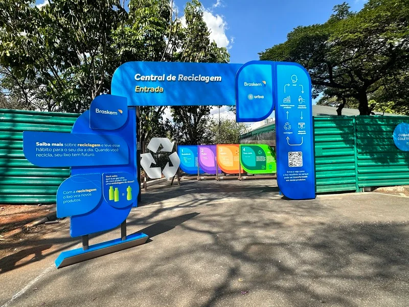
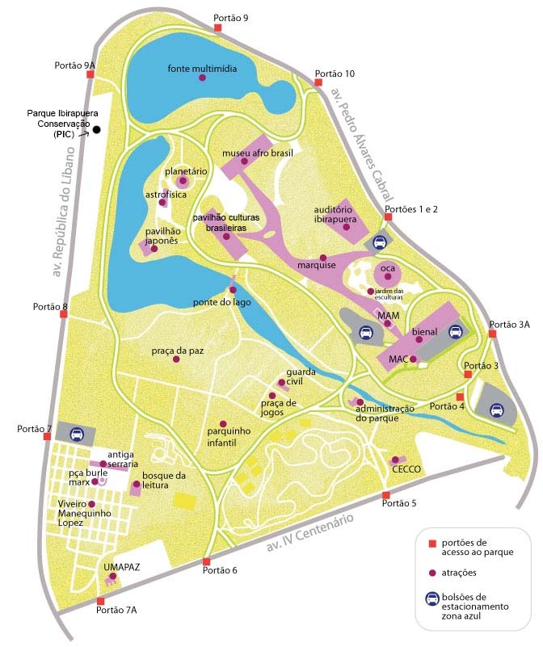

O Biogás na Sustentabilidade
O que é o Biogás?
O biogás é uma fonte de energia renovável produzida pela decomposição de matéria orgânica, como resíduos agrícolas, lixo doméstico e esgoto. Essa energia pode ser convertida em eletricidade, calor e até combustível para veículos, desempenhando um papel crucial na promoção de um futuro sustentável.
Como o Biogás é Produzido?
A produção de biogás começa com a coleta de matéria orgânica, como restos de alimentos, esterco animal, resíduos de jardins e até resíduos industriais. Esse material é então colocado em um ambiente fechado, chamado digestor, onde a falta de oxigênio permite que microorganismos decomponham a matéria orgânica. O biogás gerado pode ser capturado e utilizado para gerar energia.
Como posso contribuir?
Muitos locais e iniciativas coletam resíduos orgânicos para transformá-los em biogás ou compostagem, para você contribuir basta descartar residuos orgânicos nestes locais, um exemplo de local que faz este tipo de coleta é o parque ibirapuera.
Central de Reciclagem Ibirapuera
A Central de Reciclagem é um espaço, dentro do próprio Parque Ibirapuera, para otimização do gerenciamento de resíduos e da reciclagem, tranformando os resíduos orgânicos em biogás ou compostagem.
Pontos de Coleta
Os pontos de coleta da central de reciclagem do parque Ibirapuera ficam localizados na região dos portões de acesso ao parque.
 Iniciar o Quiz